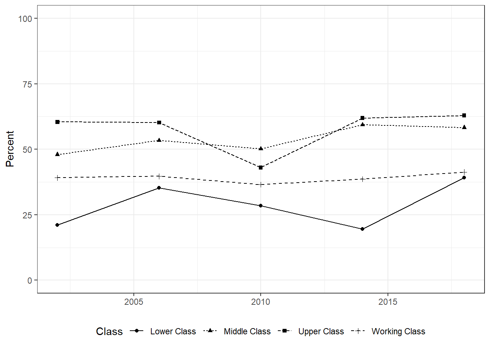

4.7 Exercises
Natural Gas Usage and Temperature: Use the data
heatingfor this exercise. Construct a scatter plot with temperature on the horizontal axis and natural gas usage on the vertical axis. What do you observe? How would you expect the graph to look like if electricity consumption was on the vertical axis?Household Pulse Survey: The U.S. Census Bureau has created a weekly survey to quickly and efficiently deploy data collected on how people’s lives have been impacted by the coronavirus pandemic. The results are presented weekly (e.g., week 22 represents January 6-18, 2021). If you go to the survey’s webpage, you find that you can explore the data using three tools. There is the Interactive Tool which uses a graphical user interface to display the data. There are Data Tables which represent the aggregate data in Excel files. And lastly, there are Public Use Files (PUF) which contain the original data. For this exercise, you will use the PUF of the most recent week available to do the following:
Download the most recent PUF file in csv-format which is denoted “HPS Week X PUF CSV” where X represents the week. Extract the zip-file and you find three csv-files. The two following files are necessary for this exercise (no need to use the largest file):
pulse2020_data.dictonary_CSV_X.csvpulse2020_puf_X.csv
Column \(Variable\) in pulse2020_data.dictonary_CSV_X.csv describes the columns in pulse2020_puf_X.csv. Pick two variables which are of interest to you, e.g., Educational attainment and Frequency of worry over previous 7 days, and construct a cross-table (using the package
gmodelsfor example) similar to the one on gun ownership but only include the dimensions of interest. So for example, given the relationship between worrying and education, the R-code would look like this:What is your interpretation of the results obtained in part (b)? Is it what you expected? What do you conclude from a policy perspective?
GSS 2018: In the data set
gss2018, pick two of the following variables: \(fulltime\), \(government\), \(married\), \(vote\), \(gun\), \(deathpenalty\). Construct a cross-table similar to the one about gender and guns in the section Introduction to R. using the functionCrossTable(). Ignore the Chi-square statistic but explain if you see any pattern that is of interest.Airport Delays: Pick an airport (not IND) and year of your choice in the data set
airlines. You should be using the functionsubset()to pick year and airport. Next, add a column called \(delay\) which is the share of delays from all the arriving flights. Next, construct a boxplot with all the airlines on the x-axis, i.e., one boxplot, and the variable \(delay\) on the vertical axis. Interpret the boxplot. Are there airlines which are particularly on time or always late?Housing Price Index: Pick one of 49 U.S. States (not Indiana). Go to the FRED webpage and download two data series: (1) All-Transactions House Price Index for the United States (USSTHPI) and (2) All-Transactions House Price Index for the state of your choice. Answer the following questions.
- What do the two data series describe?
- Plot the two data series over time. Your result should look similar to Panel (b) in Figure \(\ref{fig:SUM_exercises}\).
- How do the housing prices evolve in your state compared to the United States. Do homes in your state get more expensive than the general trend? Less? How has the housing market evolved during and after the 2008 recession?
Figure 4.7: Evolution of the All Transaction House Price Index for the U.S. and Indiana (Source: FRED St. Louis)
- BMW Data and Boxplot: Consider the used car data set
bmwfor this exercise which contains the prices and miles of a particular BMW model in the Indianapolis area. The column \(allwheeldrive\) indicates whether the car has all wheel drive (1) or not (0). You must use the R/RStudio commands and not just look at the data. Answer the following questions:- Calculate the following statistics for price and miles: Minimum, maximum, median, and mean.
- Calculate the same statistics as in the previous part but separate the data into two groups: (1) with all-wheel drive and (2) without all-wheel drive.
- Use the data on prices only. Create a box-and-whisker plot grouped by all-wheel drive. This must be one graph.
- EPA Fuel Economy: Use the 2018 data contained in
vehiclesfor this problem.- Generate a scatter plot of the variables
displandcomb08U. What can you say about the shape of the scatter plot and the relationship between engine displacement and fuel economy. - Transform both variables into their natural logarithm and plot the scatter plot. What changes?
- Create a table summarizing the average fuel economy by vehicle class (VClass) for the following four manufacturers: (1) Ford, (2) Chevrolet, (3) Toyota and (4) Honda. You will have to use the function
aggregate()for this.
- Generate a scatter plot of the variables
- GSS Trends: The General Social Survey is an annual survey tracking societal trends in the United States. For a more detailed description, you can go to here. In this exercise, I want you pick a particular issue and one breakdown (e.g., age, sex, political affiliation) and plot a graph with R/RStudio on how attitudes about the issue have evolved over time. I suggest, you go to trends and pick a topic you are interested in. You will see that the website already provides you with a trend graph but I want you to use R/RStudio for this exercise and re-create the graph (i.e., you get zero points if you simply copy the graph provided on the website). For example, suppose you are interested in the variable which asks the respondent ``Do you feel that the income from your job alone is enough to meet your family’s usual monthly expenses and bills?’’ One of many possibility to plot this with R/RStudio would look like Panel (b) in Figure \(\ref{fig:SUM_exercises}\). Make sure to label the \(x\),\(y\)-axis correctly as well as provide a legend for the graph.

- WDI Boxplot: The World Bank data
wdicontains development indicators and also information how the World Bank classifies those countries by region and income. Focus on the years 1975, 1985, 1995, 2005, and 2015 for this question. Use the commandsubset()to extract those years. Next, you have to install and load the packagegglpot2. The packageggplot2allows you to do some great data visualization. Execute the commands below. The result is a boxplot by region and by year. Based on the resulting plot, explain differences between regions in terms of life expectancy and also in terms of evolution over time.
wdiofinterest = subset(wdi,year %in% c(1975,1985,1995,2005,2015))
ggplot(wdiofinterest,aes(x=region,y=lifeexp,fill=as.character(year)))+
geom_boxplot(position=position_dodge(1))- Faithful: The data set
faithfulwhich is included with R contains data about the eruption and waiting times in minutes between eruptions from Old Faithful geyser in Yellowstone National Park. Use a scatter plot to visualize the relationship between eruption and waiting time. That is, generate graph with \(eruption\) on the vertical axis and \(waiting\) on the horizontal axis. What do you observe? What is the correlation coefficient? Is there anything odd in the resulting scatter plot? Next, use R to construct a empirical cumulative distribution function.